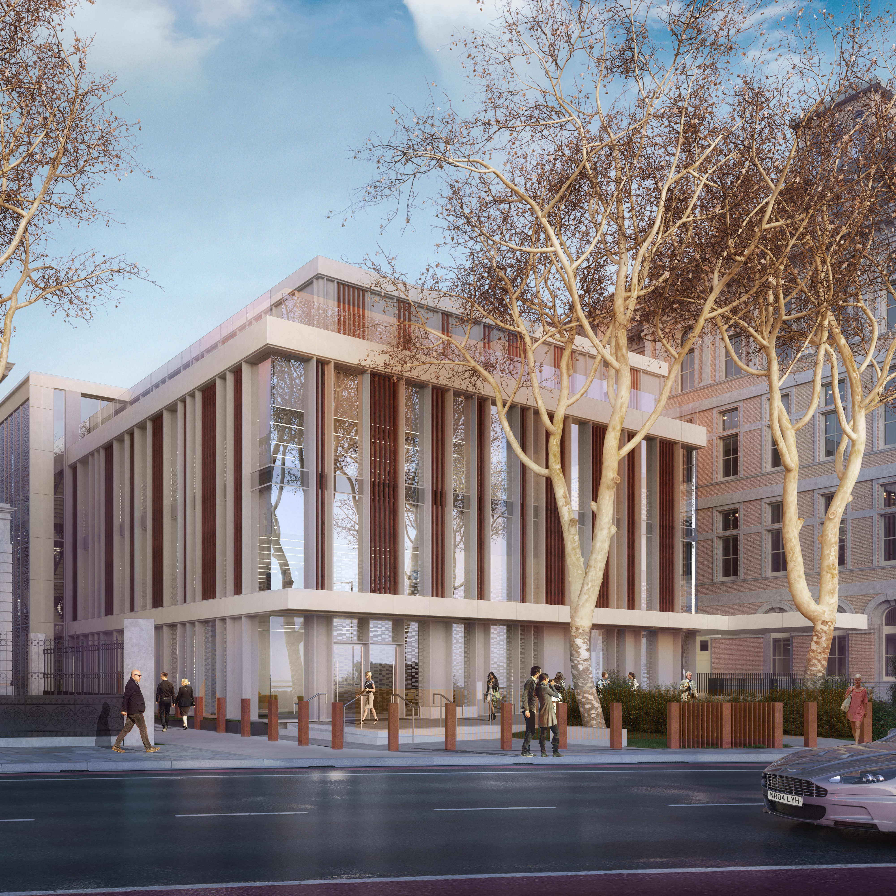
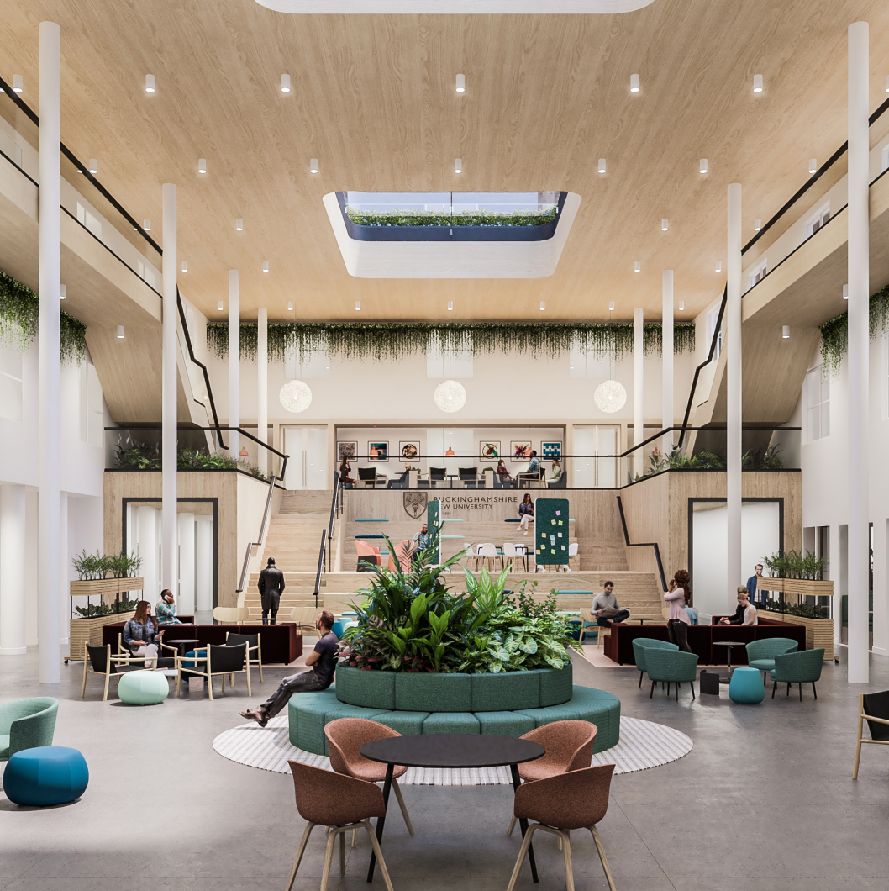
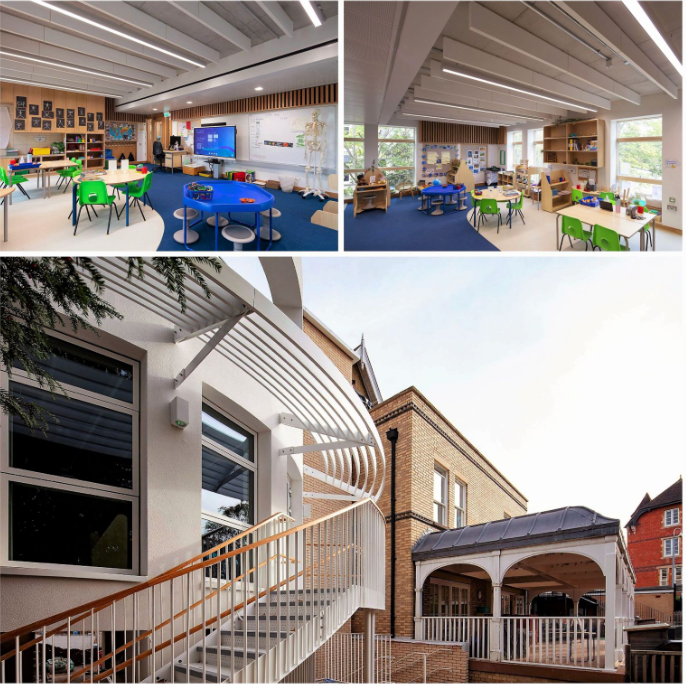

As a born and raised South African, I innately grew a very curious mind for the world and evolved a passion for learning. I had to work several jobs during my undergraduate studies and developed a strong sense for hard work and time management, which led to habits of being proactive. Educated in Civil Engineering, I pursued project management to further develop my skills for communication, adaptability & problem solving. In my spare time, I evidently enjoy learning coding and going for long walks with my partner and dog. I also really enjoy travelling abroad and learning new cultures. I always seek a challenge and contstantly strive for success.
As a new build directly opposite Big Ben, I assisted and managed delivering a innovative building containing facilities catering to the discovery of new and advanced creations towards the healthcare industry. This included multi-level facilities, such as bespoke office space with demountable partitions, cutting edge M/E services & net-zero comittements via solar and green roof installations. In this role, I acheived a great level of trust with high priority clients, and the project team, that led to an environment that was transparent towards successful project delivery.
This project invovled a new build atrium, glazed winter garden, roof garden and refurbishments towards a mix of cat A and B fit out throughout the revitalisation of the campus. I was responsible for a range of activities, specifically delivering certain packages on the build, liaising with stakeholders to drive requirements through the change control procedure, discussing & negotiating with contractors on scope required and reporting back to the client. Notably, I implemented a high emphasis on communication with a collective goal for positive relationships. I acheived successful delivery of this project meeting all the employers requirements.
Taking more of a leading role in this mix of projects for a redevelopment scheme to several areas within the campus, I am currently delivering revitalisaed facilities and a new faculty of engineering for the University. I have implemented control procedure for the management of the fund awarded, programme of works required and coordination of stakeholders requirements. I continue to hold a great sense of responsibility for task managing other team memebers and reporting to high-level clients towards projection/s completion.
Acting as site manager for an extension to a top-listed school to deliver three additional classrooms, a library, green/blue roof with solar panels, conservatory, observation area, and open landscaping to the north of the site, as well as an extension to the teachers’ lounge, involving the install of a timber boxing extension on a steel frame. In this role, i acheived an overwhelming wealth of knowledge - construction techniques, stakeholder relations and working with team members in the UK.
Working in South Africa, i managed part of the project and site management for the installation of a 720KW solar ground mount system upon a 32 degree hill within a vineyard in sunny Cape Town, including the trenching & installation of cables of up to 5.5km in length. At the time of completion, considering its complex nature, the project was considered one of a kind throughout South Africa, which was a great achievement.
Site Manager for the installation of a 350KW ground-mount solar panel system and associated infrastructure for this Centurion country lodge. The role included management of site health and safety, as well as project deliverables.
Produce and undertake project governance (project meeting schedules, preparation of execution plans, risk registers/logs, support in value engineering, monthly reports and monitor progress, weekly/fortnightly dashboard reports). Produce the master programme and monitor progress accordingly. Support in tendering and procurement of the projects and the collation of the contract documents. Implement change control and set up the change control log. Develop negotiations with contractors to establish budgets and programmes. Manage the handover process and support clients in operationalising of the spaces. Assist with the settlement of the final account including negotiation of claims. Provide contractual advice pre and post contract to design team members and client stakeholders.
August 2022 - August 2023
Company info hereProduced the Project Execution Plans (PEP).Produce the risk registers/logs and risk workshop reviews. Supported in the production of the master programme and monitoring of progress. Supported in the preparation of appointment documents for consultants. Supported in the production of monthly reports and monitor progress. Managed the change control process. Set up the employers agents instructions (EAI) template and register/log. Conducted retuine site visits and inspections of work to date and health and safety on site.
Ensured complete Health and Safety wass achieved on site through effective systems of operation and management of documentations. I incorporated weekly co-ordination meetings and monthly H&S meetings. Ensured subcontractors are brought on-board smoothly with the use of clear communication, effective planning and to provide a means to conclude their respective orders. I acheived effective planning for health and safety, logistics, stakeholder engagement and all matters per the programme of works. I consistently had a keen eye for quality and produced reputable reports thereof. Have a strong attention to budget and where costs can be cut down, as well as looking for venues to produce/save money.
Ensured excellent quality and maximum productivity of all assignments through producing weekly progress reports. I topped company records for production obtained in specific projects. Ensured all tasks were efficiently completed by implementing daily and weekly planning schedules. Saved the company a significant amount of time and money by challenging design implementations through bending schedules and construction drawings. Conducted daily toolbox talks in order to ensure maximum security for health and safety protocols. I did not have any incidents on site and was given good rapport for my presence on site. Critically evaluated and compared service and material providers in order to procure and obtain the most cost-effective solutions. I constantly found better deals, which saved the company a lot of money.
In-house training
Obtained in May 2022